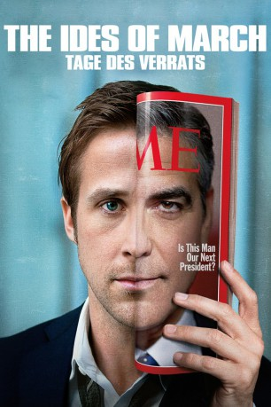
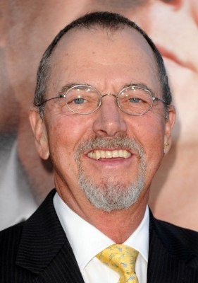
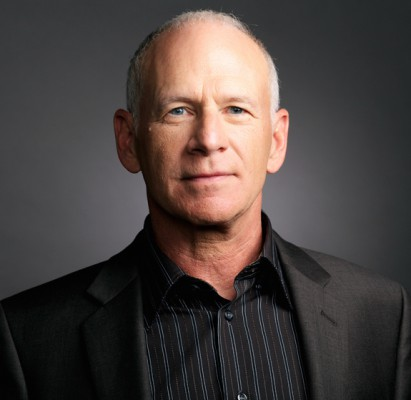
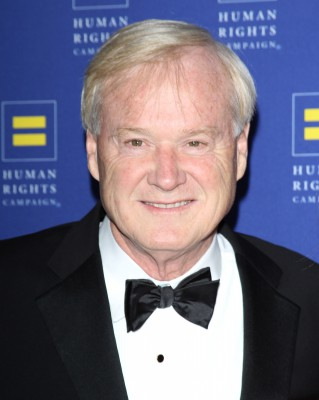
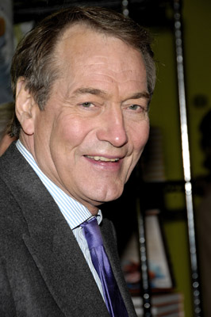
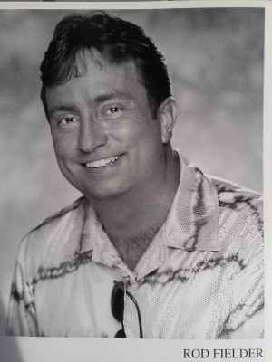

#2390 Die Iden des März
Alternativ: The Ides of March
Auszeichnungen: für 1 Oscars nominiert
 
 IMDB-Wertung: 7.1 / 10
IMDB-Wertung: 7.1 / 10  Metascore: 67
Metascore: 67 
Stephen Meyers, Berater der demokratischen Präsidentschaftshoffnung Mike Morris, gilt in jungen Jahren schon als politisches Wunderkind, der für jedes Problem einen genialen Dreh kennt und sich für keinen schmutzigen Trick zu schade ist. Zunehmend hält Meyers sich für unfehlbar. Er trifft sich mit dem Wahlkampfchef des anderen Lagers und lässt sich auf sexuelle Eskapaden ein. Er ahnt nicht, dass hinter seinem Rücken längst intrigiert und an seinem Untergang gearbeitet wird.
Jahr: 2011
Dauer: 101 Minuten
FSK: 12
Land: USA Studio: Columbia PicturesTonspuren: DTS - ,
Untertitel:
Auflösung: 1080p (1920x800) Größe: 6850 MB
Genre: Drama
Regisseur:  George Clooney
George Clooney
Drehbuch: George Clooney, Grant Heslov, Beau Willimon, Beau Willimon
Soundtrack: Alexandre Desplat
Darsteller:
 Ryan Gosling als Stephen Meyers
Ryan Gosling als Stephen Meyers George Clooney als Governor Mike Morris
George Clooney als Governor Mike Morris Philip Seymour Hoffman als Paul Zara
Philip Seymour Hoffman als Paul Zara Paul Giamatti als Tom Duffy
Paul Giamatti als Tom Duffy Evan Rachel Wood als Molly Stearns
Evan Rachel Wood als Molly Stearns Marisa Tomei als Ida Horowicz
Marisa Tomei als Ida Horowicz Jeffrey Wright als Senator Thompson
Jeffrey Wright als Senator Thompson Max Minghella als Ben Harpen
Max Minghella als Ben Harpen Jennifer Ehle als Cindy Morris
Jennifer Ehle als Cindy Morris-  Gregory Itzin als Jack Stearns
-  Michael Mantell als Senator Pullman
- Yuri Sardarov als Mike
- Bella Ivory als Jenny
- Maya Sayre als Sue
- Danny Mooney als Campaign Editor
- Mark Stacey White als Sound Man
- Kris Reilly als Student #2
- Michael Ellison als Pullman Staffer
- Hayley Meyers als Jill
- Rachel Maddow als Rachel Maddow
-  Chris Matthews als Chris Matthews
-  Charlie Rose als Charlie Rose
- Loretta Higgins als Reporter #2
- Cherie Bowman als Air Tran Ticket Agent
- Nelson Beato als Choir
- Carmen Carter als Choir
- Rachael Adams als Morris Staff , uncredited
- Talia Akiva als Beth Morris , uncredited
- Matthew W. Allen als Senior Staff Member , uncredited
- Ewan Bourne als Morris Campaign Staff , uncredited
- William Cross als Campaign Rally Attendee , uncredited
- Dennis Doyle Jr. als Video Cameraman , uncredited
-  Rod Fielder als Secret Service Agent , uncredited
 Steven Hauptman als Bar Patron / Reporter , uncredited
Steven Hauptman als Bar Patron / Reporter , uncredited- Pennie-Marie Hawkins als Mourner , uncredited
- Jennie Kahn-Jacques als Mourner / Campaign Supporter , uncredited
- Tim Kaiser als Mourner , uncredited
- Demi Kazanis als Abortion clinic doctor , uncredited
- Jon Kovach als Featured , uncredited
- Abe Larkin als Morris Campaign Staff , uncredited
- Kef Lee als Security Guard , uncredited
- Michael Loos als Senator Pullman's Aide , uncredited
 Tiffany Sander McKenzie als Debate Delegate , uncredited
Tiffany Sander McKenzie als Debate Delegate , uncredited- Sareeya McNally als Reporter , uncredited
- Darrell P. Miller als Lighting Director , uncredited
- Michael Peake als Audio Tech , uncredited
- Kara Joy Reed als Morris Campaign Staff , uncredited
- Lauren Mae Shafer als Morris' Make-up Lady , uncredited
- Tom Shafer als Hotel Manager , uncredited
- Kristyn Shelley als Audience Member , uncredited
Datei: X:\2011(G-M)\Iden des März, Die (2011, FSK12, 1920x800).mkv seit 04.11.2015
Festplatte: HD 2011(G-Z)
 Es gibt insgesamt 100 Filme in der Gruppe '2011(G-M)'
Es gibt insgesamt 100 Filme in der Gruppe '2011(G-M)'